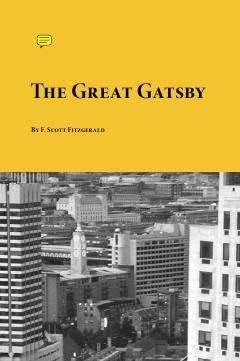

TGBoylik va sevgi iztiroblari haqidagi abadiy klassik roman.
XX asr Amerika adabiyotining durdona asarlaridan biri bo'lgan ushbu roman boylik, sevgi va 'Amerika orzusi'ning fojiali qulashini tasvirlaydi. Hikoya Nick Carraway nigohi orqali sirli millioner Jay Gatsby va uning Daisy Buchanan bilan bo'lgan o'tmishdagi muhabbatini ochib beradi.